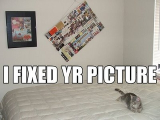
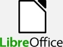
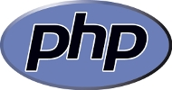
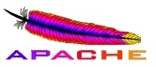
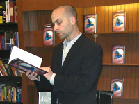

Getting Involved in Open Source
Matthew Turland
Organizer, Acadiana Open Source Group
http://acadianaos.orgBefore We Start
- Welcome! Glad you're here!
- Copies of this slide deck will be available on http://acadianaos.org - no need to take notes
- Sit back, relax, enjoy, and feel free to ask questions or make comments as the presentation continues
A Little About Me
- Organizer of the Acadiana Open Source Group since 2008
- Native of Louisiana (Carencro, Lafayette, and Duson)
- Graduated from ULL with a BS in computer science in 2006
- 10 years experience in the software development industry
- Senior Engineer at Synacor, Inc.
- Author of Web Scraping with PHP
What is Open Source?
Source means Source Code
- Source code is instructions that tell a computer how a program works
Closed Source
- Most software created by businesses is closed source, meaning that the source code is kept secret
Bugs
"Given enough eyes, all bugs are shallow." —Eric S. Raymond
- A bug is a defect in a computer program
- If a program is closed source and has a bug, only the business that sells that program can fix that bug
Open Source
- Open source software (OSS) is software for which the source code is made freely available to the general public
- This allows anyone with the necessary skills to fix bugs or add new features and submit them back to the project for inclusion

Common Examples of OSS
- Ubuntu, an alternative to Microsoft Windows
- Firefox and Chrome, alternatives to Microsoft Internet Explorer
- LibreOffice, an alternative to Microsoft Office
- Thunderbird, an alternative to Microsoft Outlook
- Pidgin, an IM client for AIM, Yahoo, MSN, Google Talk, and Facebook
- Android, an operating system for mobile devices


Well-Known Uses of OSS
- PHP, a programming language used by Facebook and Yahoo
- Apache, the web server software used to host over 59% of the web sites on the internet as of January 2011
- MediaWiki, the wiki software written in PHP that powers Wikipedia
- Blender, a 3-D content creation suite used for storyboard animatics and pre-visualizations for Spiderman 2
 
Local Uses of OSS
- ULL students use the open source Moodle learning management system
- The ULL Computer Science Department uses PHP and the MySQL database server in its undergraduate database course
- booksXYZ, a Lafayette-based online bookstore that donates proceeds to schools nation-wide
- Lafayette Traffic, an open source Android application based on an existing iPhone application for viewing local traffic information
- Firefly Digital, a Lafayette-based web design and development company
- surgiSYS, a Baton Rouge-based medical IT company specializing in surgical data management for accreditation and quality assurance
Why Open Source
- Free: great price point for individuals, small businesses, schools, libraries, non-profits, etc.
- Support: volunteers often provide free help, some vendors may offer paid support
- Participation: forums, mailing lists, and issue trackers provide direct means to communicate with developers about issues and suggestions
- Ownership: multiple ways to contribute to the quality of the software you use, even if you don't contribute source code
- Experience: young students and professionals can gain real world experience and work samples by contributing to open source projects
Open Source Applied to Content
- Scott Sigler, a fiction author who gives audio versions of his books away under the Creative Commons license, got a publishing deal based on listenership and later made the NYT Best-selling Fiction list
- Other authors with similar stories include Cory Doctorow and Mur Lafferty
- Musical duo Kurt Schneider and Sam Tsui built a large fanbase due to giving away musical covers, medleys, and mashups on YouTube

Open Source as a Community
- A largely contributing factor to the adoption and overall success of open source projects is the communities surrounding them
- Within these communities are social networks of contributors, which can lead to professional contacts or prospective employees/employers
- These communities can also serve to shine a spotlight on promising upcoming talent such as young Dmitri Gaskin, a contributor to the Drupal content management system
How Open Source Can Be Profitable
- Volunteer labor can reduce development costs
- For-profit development using open source software
- Hosting, installation, support
- Customization and add-on development
- Consulting and training
- Books and magazines
Ways to Contribute to OSS Projects
- Write code to fix bugs or add new features
- Promote the software to others, verbally and online
- Suggest new features
- Test release candidates and submit or add to bug reports
- Submit documentation improvements
- Participate in support channels, user groups, street teams, etc.
- Donate money to cover hardware or hosting costs
- Purchase and wear branded merchandise
Ways to Contribute to AOS
- First and foremost, attend our monthly meetings
- Help to spread the word about the group, meetings, and open source in the local community
- Give a short presentation (15-30 minutes) at a meeting on an open source-related topic
- Sponsor refreshments or door prizes
- Consider adopting open source in your own organization and hiring local professionals
That's All, Folks
- Questions? Comments? Concerns?
- Thanks for coming out! Hope to see you at the next meeting!
- Continued thanks go out to the LITE Center for hosting us
- E-mail: me@matthewturland.com
- Web site: http://matthewturland.com
- Twitter: @elazar
- More on the Acadiana Open Source Group at http://acadianaos.org